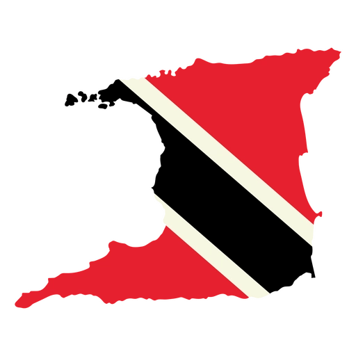
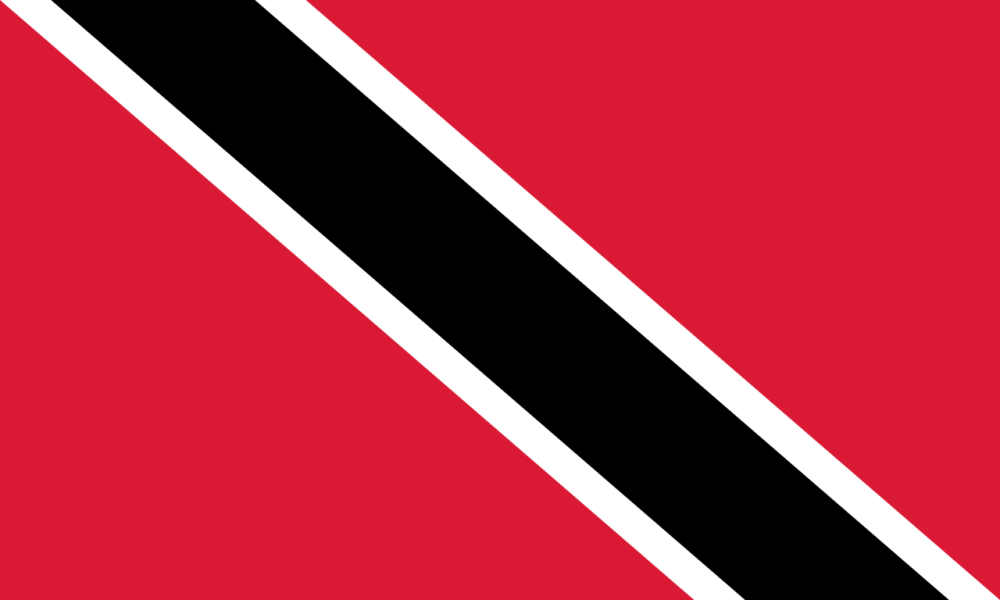
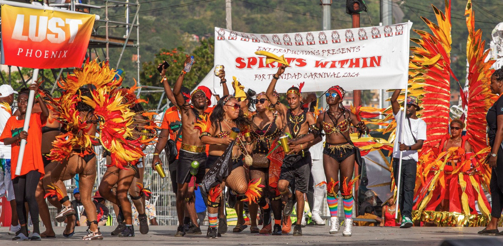
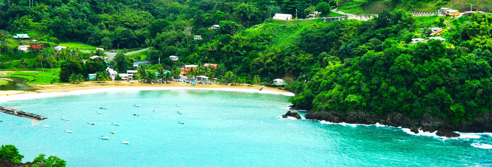

Trinidad and Tobago, officially the Republic of Trinidad and Tobago, is the southernmost island country in the Caribbean, comprising the main islands of Trinidad and Tobago, along with several smaller islets. The capital city is Port of Spain, while its largest and most populous municipality is Tunapuna/Piarco. Trinidad and Tobago comprises the southern most islands of the Caribbean eastern islands chain, and it is close to the continent of South America, being northeast of Venezuela and northwest of Guyana.

Trinidad Carnival is held every year in the days leading up to Ash Wednesday.
Revellers in spectacular, jewel-encrusted costumes parade through Port of Spain to the pulse of
soca music. It is widely regarded as the Greatest Show on Earth.
The tradition dates back to the late 18th century when French settlers introduced pre-Lenten
masquerade balls. Enslaved Africans adopted and transformed the celebration, creating the
vibrant festival we know today as an explosion of freedom, creativity, and joy.

Trinidad and Tobago's beaches range from the tourist packed shores of Maracas Bay in Trinidad to the pristine, turquoise waters of Pigeon Point and the secluded rainforest-lined coves of Englishman's Bay in Tobago. This makes Trinidad and it one of the Caribbean's most diverse beach destinations.
T&T lies just 11 km off the northeastern coast of Venezuela. The country gained independence from the UK on August 31, 1962. It is the southernmost island nation of the Caribbean and is known for:
| Price (USD) | |
|---|---|
| Round-trip flight from JFK | $800 |
| Hotel for 2 per night | $120 |
| Food per person per day | $50 |
| Attractions & Activities per person | $100 |
Email to: info@exploreTT.com
Carnival | Beaches | Contact Us
Project 1 — Trinidad & Tobago